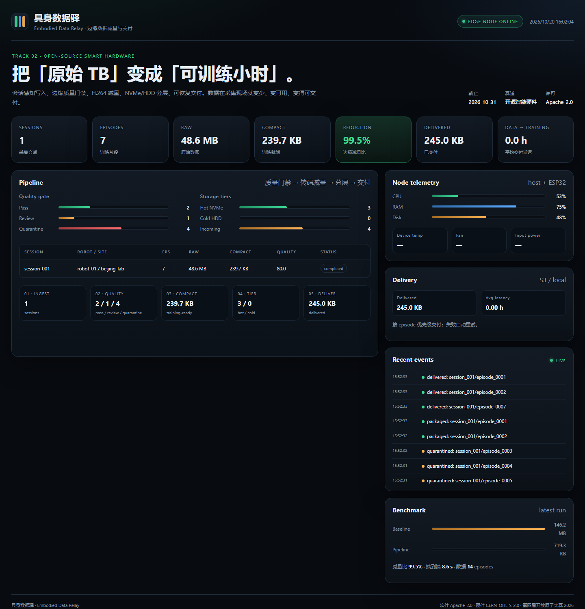

项目名称：具身数据驿｜边缘减量 · 冷热分层 · 弱网快传
具身智能的数据瓶颈集中在两处：大量不可用数据占用存储，弱网上传又拖慢交付。具身数据驿在采集现场完成会话级无损写入、质量门禁、训练格式压缩、热冷分层和可恢复交付，把原始 TB 变成可训练小时。

交付形态是一台可复现的边缘数据站：小主机 + NVMe + HDD + UPS + ESP32 健康监控。BOM、接线、3D 外壳、固件全部开源，别人能照着装出来。
通用 NAS 与 bcache/dm-cache 不感知录制会话；具身数据是大块顺序写，bcache 默认还会绕过顺序 IO。我们把「会话封存、质量门禁、交付优先级」放在存储路径里。
有从业者给出的口径是：原始素材约只有 三成 能真正用于训练。模糊、过暗、遮挡、重复、失败片段如果不在现场处理，就会占用存储、带宽和后续清洗人力。
| 方案 | 会话感知 | 质量门禁 | 边缘减量 | 交付调度 | 开源硬件 |
|---|---|---|---|---|---|
| NAS + SSD 缓存 | 否 | 否 | 否 | 弱 | 部分 |
| bcache / dm-cache / ZFS L2ARC | 否 | 否 | 否 | 否 | 否 |
| 云对象存储 + 上传工具 | 否 | 否 | 弱 | 弱 | 否 |
| 具身数据驿 | 是 | 是 | 是 | 是 | 是 |
录制会话在 NVMe 上以追加方式暂存，会话封存（_COMPLETE + manifest）后才进入分层；未封存的会话不参与交付。MVP 用 UPS + checksum + 重试保证可恢复；路线图加入掉电刷盘与超级电容。
对每个 episode 抽样帧，计算 Laplacian 方差（模糊）、灰度均值（过暗/过曝）、黑帧比例、连续帧差异（重复）。输出 0-100 分与 pass / review / quarantine；只隔离，不删除，隔离数据仍可在冷层追溯。
图像序列/视频统一转 H.264 MP4；状态保留 JSONL/Parquet；生成含 sha256 的 manifest。输出是「训练就绪包」：更少的字节、更明确的 episode 边界、可直接按 episode 随机读。
热层 NVMe 保存最近会话、待交付与优先 episode；冷层 HDD 保存已交付历史数据；SQLite 常驻元数据。训练端按 episode 取用，不需要整包下载。
本地目录或 S3/MinIO：本地交付已实测；S3 路径已实现（环境变量凭证、重试、checkpoint），需在部署环境验证。按 quality pass → review 的简单优先级交付，记录每次交付的 bytes、attempts、开始/完成时间，计算「数据到训练」延迟。路线图：带宽限速、更复杂队列、断点续传、物理数据胶囊。
incoming/session_x/episode_y/
camera_*/frames/*.png | camera_*/video.mp4
state.jsonl
meta.json
│
▼
scanner ──► SQLite (sessions / episodes / events)
│
▼
quality ──► quality_json + pass / review / quarantine
│
▼
transcode ──► hot/session/episode/{camera}.mp4 + state.jsonl + manifest.json
│
▼
tiering ──► cold/session/episode/...
│
▼
delivery ──► local / S3 (retry, checkpoint, latency)硬件围绕具身数据工作负载设计：软硬一体整机，包含 NVMe 缓冲、HDD 容量、UPS 掉电保护、ESP32 健康监控、开源外壳与接线。
| 部件 | 规格 | 数量 | 参考价（元） | 作用 |
|---|---|---|---|---|
| x86 小主机 | N100/i5，M.2 NVMe + SATA/USB3 | 1 | 已有 | 计算与 I/O |
| NVMe SSD | 2 TB TLC，PCIe 3.0/4.0 | 1 | 700 | 写入缓冲 / 热层 |
| HDD | 16 TB CMR，SATA | 1 | 2500 | 冷层 |
| HDD 连接 | SATA 线/电源或 USB3 硬盘盒 | 1 | 100 | 容量扩展 |
| UPS | 600 VA 后备式 | 1 | 300 | 掉电保护 |
| ESP32-S3 | NTC + PWM 风扇 + OLED（可选） | 1 | 150 | 温度/风扇健康监控 |
| 外壳 | 3D 打印/亚克力 + 铜柱 | 1 | 300 | 固定/风道 |
| 线材/散热 | SATA 电源、风扇、导热垫 | 1 | 100 | 装配 |
| 合计（不含已有主机/硬盘） | ≈ 4150 | |||
说明：MVP 使用现成小主机与 OpenSCAD 参考托盘，尚未做量产级 PCB；自定义载板（电源/风扇/超级电容）在 v0.3 路线图中。所有安全相关设计以「不涉及市电改装」为边界。
「SSD 做缓存、HDD 做容量」是成熟技术：bcache、dm-cache、ZFS L2ARC、LVM cache 都能做。我们的差异不在介质，而在面向具身数据工作负载的路径设计：
| 维度 | 通用缓存/分层 | 具身数据驿 |
|---|---|---|
| 写入单位 | 块/页热度 | 录制会话/episode；未封存不迁移 |
| 顺序大写入 | bcache 默认绕过顺序 IO | 专门吸收大块顺序写，封存后再分层 |
| 质量 | 不感知内容 | 模糊/曝光/重复/黑帧门禁；只隔离不删除 |
| 交付 | 无 episode 概念 | 按 episode 优先级交付，记录数据到训练延迟 |
| 硬件 | 通用服务器/NAS | 开源 BOM/接线/外壳/固件，可复现整机 |
edr requeue 人工重排。测试使用合成多相机数据（2 sessions / 14 episodes / 2 cameras / 30 frames / 320×240 / 153.3 MB），注入模糊、过暗、重复、黑帧、过曝缺陷。基线为「全存全传」，管线为「质检 + 减量 + 分层 + 本地交付」。
| 指标 | 基线：全存全传 | 具身数据驿 |
|---|---|---|
| 原始数据 | 153.3 MB | 153.3 MB |
| 交付数据 | 153.3 MB | 0.75 MB |
| 质量门禁剔除 | 0 | 6 / 14 episodes |
| 本地处理时间 | 1.22 s（复制） | 8.56 s |
| 建模上传时间（10 Mbps） | 122.67 s | 0.60 s |
| 数据到训练总时间 | 123.89 s | 9.16 s |
| 加速比 | 1.00× | 13.53× |
| 项 | 值 |
|---|---|
| 数据集 | lerobot/pusht（MIT，206 episodes / 96×96 / 10fps） |
| 样本 | 2 episodes × 100 frames |
| 原始 PNG 帧 | 427,173 B |
| 压缩后（MP4 + state + manifest） | 65,785 B |
| 编码减量 | 84.6%（6.5×） |
| 质量门禁 | 2/2 pass（阈值校准后） |
校准发现：pusht 是白底高亮场景，平均亮度约 249；默认 bright_threshold: 220 会把正常帧误判为过曝，pilot 配置调到 253。质量阈值必须按传感器/场景校准。该样本仅 96×96、单相机；1080p 多相机 pilot 是下一步。
uv venv --python 3.12
uv pip install -e ".[dev]"
python scripts/benchmark.py --clean --sessions 2 --episodes 7 \
--cameras 2 --frames 30 --uplink-mbps 10NOTICEedr/ 核心管线（scanner / quality / transcode / tiering / delivery / api）
scripts/ 合成采集器、benchmark、bootstrap
hardware/ BOM、接线、OpenSCAD 外壳、ESP32 固件
docs/ 架构、部署、benchmark、参赛说明、视频脚本
tests/ 12 个 pytest（质量门禁、管线、API、重试、分层、扫描）
.github/ CI、issue/PR 模板scripts/bootstrap.sh 或手动安装 Python/FFmpeg。synth_recorder.py 生成缺陷数据，或接入真实 rosbag2/MCAP。edr pipeline，打开 dashboard 查看质量、分层与交付。benchmark.py 复现数字。| 阶段 | 时间 | 目标 |
|---|---|---|
| v0.1 Competition MVP | 2026-10 | 单机、合成数据、本地/S3 交付、开源治理齐全 |
| v0.2 Real-data pilot | 2026-11 → 12 | 真实 rosbag2/MCAP、LeRobot exporter、掉电恢复、ESP32 健康监控 |
| v0.3 Multi-node & cartridge | 2027 Q1 | 多节点索引、交付调度、可热插拔数据胶囊、10GbE |
| v1.0 Production | 2027 Q2 | 生产安装包、升级/回滚、监控告警、商业支持 |
项目负责人：叶海洋；团队人数：1。
当前为高校团队 MVP，团队 ≤8 人；赛后计划招募 2-3 名 co-maintainer（嵌入式/数据工程/文档社区）。
负责人联系方式见官网报名表。
代码仓库：https://github.com/caijiye/embodied-data-relay
会务组：bjoscc@oschina.cn
以下资料用于行业数据、技术路线与开源组件的公开来源说明。